In November 2007, more than 12,000 film, television, and radio writers working in the United States went on strike for fairer pay. Lasting for more than 3 months, the strike disrupted many hit shows in 2008 and cost the Los Angeles economy $2.5 billion.Associated Press, “Writers Strike Cost L.A. Economy $2.5 billion,” MSNBC, February 19, 2008, http://www.msnbc.msn.com/id/23244509/. While production for many television shows was on hiatus, several industry executives were thinking of new ways to reach their audience. Declaring that it was “time to change the face of Show Business as we know it,” Buffy the Vampire Slayer creator Joss Whedon started writing a three-part musical series specifically designed to be released on the Internet.Dr. Horrible’s Sing-Along Blog: Official Fan Site, http://doctorhorrible.net/about/. Starring Neil Patrick Harris as an aspiring supervillain eager to join the Evil League of Evil, Dr. Horrible’s Sing-Along Blog featured three 14-minute acts that told the story of Dr. Horrible; his nemesis, Captain Hammer (Nathan Fillion); and their mutual love interest, Penny (Felicia Day). Whedon cowrote the musical with his brothers and funded the $200,000 project, filming the series in a small studio he set up in his Los Angeles loft and at several outdoor locations in the city. None of the cast or crew initially received compensation for the project.
The first act of Dr. Horrible was released on its official website on July 15, 2008, hosted by free online video service Hulu. Act II followed on July 17 and Act III appeared 2 days later. Viewers could watch all three episodes for free online anywhere in the world. Shortly after the free viewing, the tragicomic musical was made available for purchase on iTunes, where it reached No. 1 on the video chart, totaling 2.2 million downloads per week. The soundtrack was also released via iTunes, obtaining the No. 1 spot on the first day of its release and debuting at No. 39 on the Billboard 200 chart. Capitalizing on the musical’s online success, Whedon greenlit, or authorized, the creation of a DVD, which was released exclusively through Amazon.com on December 19, 2008, and reached the No. 3 position for Amazon’s movies and television sales. Illustrating the participatory nature of the new medium, the DVD extras featured several video submissions from fans. The 3-minute video clips were winning entries from a competition announced at Comic-Con—an annual comic book and fan convention held in San Diego—in which fans explained why they should be inducted into the Evil League of Evil. The DVD also featured a singing commentary from the cast and crew, performed both in and out of character. Internet downloads, DVD sales, and soundtrack sales enabled Whedon to pay back the cast and crew of Dr. Horrible and confirmed the online musical as a viable model for future independent productions.
Although Dr. Horrible was an unlikely commercial success, it quickly became a media sensation. Named one of the best inventions of 2008 by Time magazine and awarded an Emmy for best short-format live-action entertainment program, the online supervillain musical challenged traditional notions that a big-budget studio is necessary to create a hit television series. Along with other successful web television series such as The Guild, Dorm Life, and Lonelygirl15, Dr. Horrible has helped to pave the way for smaller independent companies to create popular entertainment. An understanding of how television evolved and how it is beginning to merge with the Internet will provide insight into the future of content delivery and viewer patterns.
Since replacing radio as the most popular mass medium in the 1950s, television has played such an integral role in modern life that, for some, it is difficult to imagine being without it. Both reflecting and shaping cultural values, television has at times been criticized for its alleged negative influences on children and young people and at other times lauded for its ability to create a common experience for all its viewers. Major world events such as the John F. Kennedy and Martin Luther King assassinations and the Vietnam War in the 1960s, the Challenger shuttle explosion in 1986, the 2001 terrorist attacks on the World Trade Center, and the impact and aftermath of Hurricane Katrina in 2005 have all played out on television, uniting millions of people in shared tragedy and hope. Today, as Internet technology and satellite broadcasting change the way people watch television, the medium continues to evolve, solidifying its position as one of the most important inventions of the 20th century.
Inventors conceived the idea of television long before the technology to create it appeared. Early pioneers speculated that if audio waves could be separated from the electromagnetic spectrum to create radio, so too could television waves be separated to transmit visual images. As early as 1876, Boston civil servant George Carey envisioned complete television systems, putting forward drawings for a “selenium camera” that would enable people to “see by electricity” a year later.“Visionary Period, 1880’s Through 1920’s,” Federal Communications Commission, November 21, 2005, http://www.fcc.gov/omd/history/tv/1880-1929.html
During the late 1800s, several technological developments set the stage for television. The invention of the cathode ray tube (CRT)An electronic display device in which a beam of electrons is focused on a glass viewing screen to create an image. by German physicist Karl Ferdinand Braun in 1897 played a vital role as the forerunner of the television picture tube. Initially created as a scanning device known as the cathode ray oscilloscope, the CRT effectively combined the principles of the camera and electricity. It had a florescent screen that emitted a visible light (in the form of images) when struck by a beam of electrons. The other key invention during the 1880s was the mechanical scanner system. Created by German inventor Paul Nipkow, the scanning diskA large, flat metal disk with perforations arranged in a spiral pattern used as a rotating camera in early television models. was a large, flat metal disk with a series of small perforations arranged in a spiral pattern. As the disk rotated, light passed through the holes, separating pictures into pinpoints of light that could be transmitted as a series of electronic lines. The number of scanned lines equaled the number of perforations, and each rotation of the disk produced a television frame. Nipkow’s mechanical disk served as the foundation for experiments on the transmission of visual images for several decades.
In 1907, Russian scientist Boris Rosing used both the CRT and the mechanical scanner system in an experimental television system. With the CRT in the receiver, he used focused electron beams to display images, transmitting crude geometrical patterns onto the television screen. The mechanical disk system was used as a camera, creating a primitive television system.
Figure 9.1

Two key inventions in the 1880s paved the way for television to emerge: the cathode ray tube and the mechanical disk system.
From the early experiments with visual transmissions, two types of television systems came into existence: mechanical television and electronic television. Mechanical televisionA television system that used mechanical moving parts to capture and display images. Mechanical television was phased out during the 1930s in favor of electronic television. developed out of Nipkow’s disk system and was pioneered by British inventor John Logie Baird. In 1926, Baird gave the world’s first public demonstration of a television system at Selfridge’s department store in London. He used mechanical rotating disks to scan moving images into electrical impulses, which were transmitted by cable to a screen. Here they showed up as a low-resolution pattern of light and dark. Baird’s first television program showed the heads of two ventriloquist dummies, which he operated in front of the camera apparatus out of the audience’s sight. In 1928, Baird extended his system by transmitting a signal between London and New York. The following year, the British Broadcasting Corporation (BBC) adopted his mechanical system, and by 1932, Baird had developed the first commercially viable television system and sold 10,000 sets. Despite its initial success, mechanical television had several technical limitations. Engineers could get no more than about 240 lines of resolution, meaning images would always be slightly fuzzy (most modern televisions produce images of more than 600 lines of resolution). The use of a spinning disk also limited the number of new pictures that could be seen per second, resulting in excessive flickering. The mechanical aspect of television proved to be a disadvantage that required fixing in order for the technology to move forward.
At the same time Baird (and, separately, American inventor Charles Jenkins) was developing the mechanical model, other inventors were working on an electronic televisionAll-electronic television system that scanned images using an electronic camera and received images by cathode ray tube. Electronic television replaced mechanical television in the 1930s. system based on the CRT. While working on his father’s farm, Idaho teenager Philo Farnsworth realized that an electronic beam could scan a picture in horizontal lines, reproducing the image almost instantaneously. In 1927, Farnsworth transmitted the first all-electronic television picture by rotating a single straight line scratched onto a square piece of painted glass by 90 degrees.
Farnsworth barely profited from his invention; during World War II, the government suspended sales of television sets, and by the time the war ended, Farnsworth’s original patents were close to expiring. However, following the war, many of his key patents were modified by RCA and were widely applied in broadcasting to improve television picture quality.
Figure 9.2
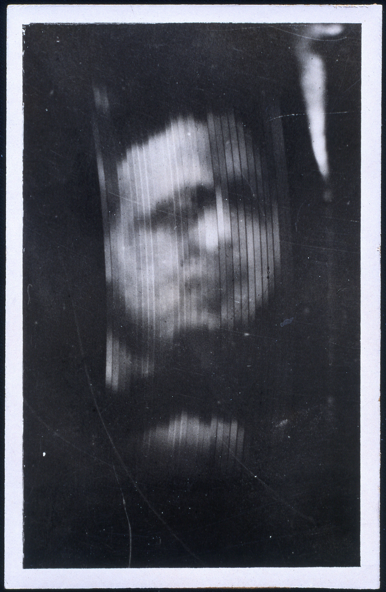The low image resolution of John Logie Baird’s mechanical television was a major disadvantage that led to the technology’s replacement by electronic television systems.
Having coexisted for several years, electronic television sets eventually began to replace mechanical systems. With better picture quality, no noise, a more compact size, and fewer visual limitations, the electronic system was far superior to its predecessor and rapidly improving. By 1939, the last mechanical television broadcasts in the United States had been replaced with electronic broadcasts.
Television broadcasting began as early as 1928, when the Federal Radio Commission authorized inventor Charles Jenkins to broadcast from W3XK, an experimental station in the Maryland suburbs of Washington, DC. Silhouette images from motion picture films were broadcast to the general public on a regular basis, at a resolution of just 48 lines. Similar experimental stations ran broadcasts throughout the early 1930s. In 1939, RCA subsidiary NBC (National Broadcasting Company) became the first network to introduce regular television broadcasts, transmitting its inaugural telecast of the opening ceremonies at the New York World’s Fair. The station’s initial broadcasts transmitted to just 400 television sets in the New York area, with an audience of 5,000 to 8,000 people.Lenox Lohr, Television Broadcasting (New York: McGraw Hill, 1940).
Television was initially available only to the privileged few, with sets ranging from $200 to $600—a hefty sum in the 1930s, when the average annual salary was $1,368.Library, Lone Star College: Kinwood, “American Cultural History 1930–1939,” http://kclibrary.lonestar.edu/decade30.html. RCA offered four types of television receivers, which were sold in high-end department stores such as Macy’s and Bloomingdale’s, and received channels 1 through 5. Early receivers were a fraction of the size of modern television sets, featuring 5-, 9-, or 12-inch screens. Television sales prior to World War II were disappointing—an uncertain economic climate, the threat of war, the high cost of a television receiver, and the limited number of programs on offer deterred numerous prospective buyers. Many unsold television sets were put into storage and sold after the war.
NBC was not the only commercial network to emerge in the 1930s. RCA radio rival CBS (Columbia Broadcasting System) also began broadcasting regular programs. So that viewers would not need a separate television set for each individual network, the Federal Communications Commission (FCC) outlined a single technical standard. In 1941, the panel recommended a 525-line system and an image rate of 30 frames per second. It also recommended that all U.S. television sets operate using analog signalsBroadcast signal made of varying radio waves. Analog signals were used to broadcast television programming for 60 years. They were replaced by digital signals in 2009. (broadcast signals made of varying radio waves). Analog signals were replaced by digital signalsSignals transmitted as binary code. Digital signals replaced analog signals as the universal method of transmitting television broadcasts in 2009. (signals transmitted as binary code) in 2009.
With the outbreak of World War II, many companies, including RCA and General Electric, turned their attention to military production. Instead of commercial television sets, they began to churn out military electronic equipment. In addition, the war halted nearly all television broadcasting; many television stations reduced their schedules to around 4 hours per week or went off the air altogether.
Although it did not become available until the 1950s or popular until the 1960s, the technology for producing color television was proposed as early as 1904, and was demonstrated by John Logie Baird in 1928. As with his black-and-white television system, Baird adopted the mechanical method, using a Nipkow scanning disk with three spirals, one for each primary color (red, green, and blue). In 1940, CBS researchers, led by Hungarian television engineer Peter Goldmark, used Baird’s 1928 designs to develop a concept of mechanical color television that could reproduce the color seen by a camera lens.
Following World War II, the National Television System Committee (NTSC) worked to develop an all-electronic color system that was compatible with black-and-white television sets, gaining FCC approval in 1953. A year later, NBC made the first national color broadcast when it telecast the Tournament of Roses Parade. Despite the television industry’s support for the new technology, it would be another 10 years before color television gained widespread popularity in the United States, and black-and-white television sets outnumbered color television sets until 1972.John Klooster, Icons of Invention: The Makers of the Modern World from Gutenberg to Gates (Santa Barbara, CA: ABC-CLIO, 2009), 442.
Figure 9.3
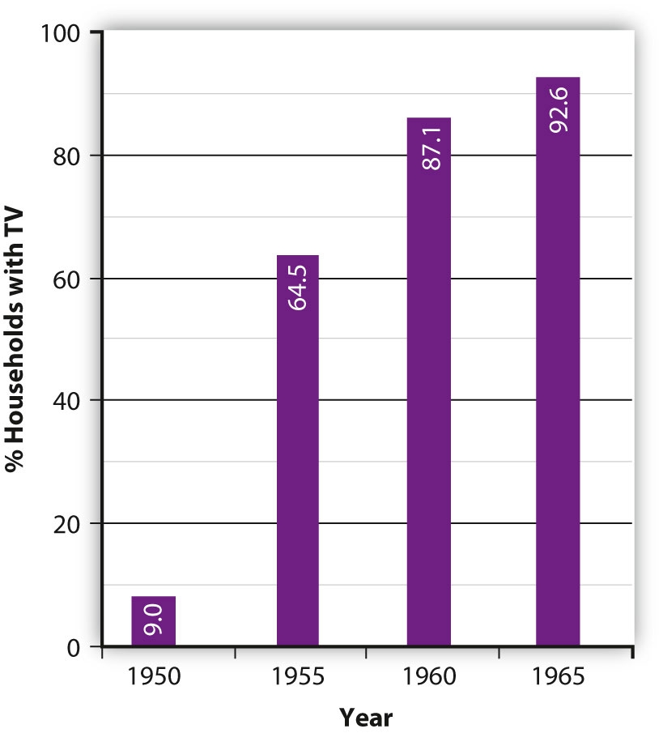During the so-called “golden age” of television, the percentage of U.S. households that owned a television set rose from 9 percent in 1950 to 95.3 percent in 1970.
The 1950s proved to be the golden age of television, during which the medium experienced massive growth in popularity. Mass-production advances made during World War II substantially lowered the cost of purchasing a set, making television accessible to the masses. In 1945, there were fewer than 10,000 television sets in the United States. By 1950, this figure had soared to around 6 million, and by 1960 more than 60 million television sets had been sold.World Book Encyclopedia (2003), s.v. “Television.” Many of the early television program formats were based on network radio shows and did not take advantage of the potential offered by the new medium. For example, newscasters simply read the news as they would have during a radio broadcast, and the network relied on newsreel companies to provide footage of news events. However, during the early 1950s, television programming began to branch out from radio broadcasting, borrowing from theater to create acclaimed dramatic anthologies such as Playhouse 90 (1956) and The U.S. Steel Hour (1953) and producing quality news film to accompany coverage of daily events.
Two new types of programs—the magazine format and the television spectacular—played an important role in helping the networks gain control over the content of their broadcasts. Early television programs were developed and produced by a single sponsor, which gave the sponsor a large amount of control over the content of the show. By increasing program length from the standard 15-minute radio show to 30 minutes or longer, the networks substantially increased advertising costs for program sponsors, making it prohibitive for a single sponsor. Magazine programs such as the Today show and The Tonight Show, which premiered in the early 1950s, featured multiple segments and ran for several hours. They were also screened on a daily, rather than weekly, basis, drastically increasing advertising costs. As a result, the networks began to sell spot advertisements that ran for 30 or 60 seconds. Similarly, the television spectacular (now known as the television special) featured lengthy music-variety shows that were sponsored by multiple advertisers.
Figure 9.4
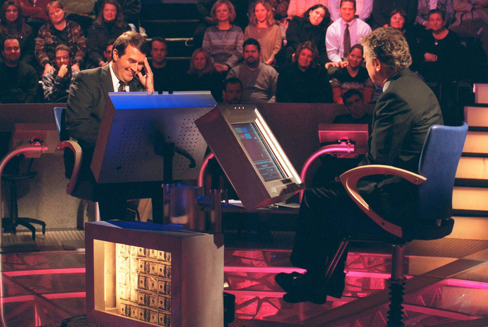ABC’s Who Wants to Be a Millionaire brought the quiz show back to prime-time television after a 40-year absence.
In the mid-1950s, the networks brought back the radio quiz-show genre. Inexpensive and easy to produce, the trend caught on, and by the end of the 1957–1958 season, 22 quiz shows were being aired on network television, including CBS’s $64,000 Question. Shorter than some of the new types of programs, quiz shows enabled single corporate sponsors to have their names displayed on the set throughout the show. The popularity of the quiz-show genre plunged at the end of the decade, however, when it was discovered that most of the shows were rigged. Producers provided some contestants with the answers to the questions in order to pick and choose the most likable or controversial candidates. When a slew of contestants accused the show Dotto of being fixed in 1958, the networks rapidly dropped 20 quiz shows. A New York grand jury probe and a 1959 congressional investigation effectively ended prime-time quiz shows for 40 years, until ABC revived the genre with its launch of Who Wants to Be a Millionaire in 1999.William Boddy, “The Seven Dwarfs and the Money Grubbers,” in Logics of Television: Essays in Cultural Criticism, ed. Patricia Mellencamp (Bloomington, IN: Indiana University Press, 1990), 98–116.
Formerly known as Community Antenna Television, or CATV, cable televisionA system of providing television and other media services to consumers via coaxial cable. Subscribers are connected through a central community antenna, which picks up satellite signals for distribution. was originally developed in the 1940s in remote or mountainous areas, including in Arkansas, Oregon, and Pennsylvania, to enhance poor reception of regular television signals. Cable antennas were erected on mountains or other high points, and homes connected to the towers would receive broadcast signals.
In the late 1950s, cable operators began to experiment with microwave to bring signals from distant cities. Taking advantage of their ability to receive long-distance broadcast signals, operators branched out from providing a local community service and began focusing on offering consumers more extensive programming choices. Rural parts of Pennsylvania, which had only three channels (one for each network), soon had more than double the original number of channels as operators began to import programs from independent stations in New York and Philadelphia. The wider variety of channels and clearer reception the service offered soon attracted viewers from urban areas. By 1962, nearly 800 cable systems were operational, serving 850,000 subscribers.
Figure 9.5
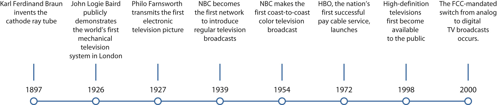The Evolution of Television
Cable’s exponential growth was viewed as competition by local television stations, and broadcasters campaigned for the FCC to step in. The FCC responded by placing restrictions on the ability of cable systems to import signals from distant stations, which froze the development of cable television in major markets until the early 1970s. When gradual deregulation began to loosen the restrictions, cable operator Service Electric launched the service that would change the face of the cable television industry—pay TVSubscription-based television service in which consumers pay a fee to the program provider.. The 1972 Home Box Office (HBO) venture, in which customers paid a subscription fee to access premium cable television shows and video-on-demand products, was the nation’s first successful pay cable service. HBO’s use of a satellite to distribute its programming made the network available throughout the United States. This gave it an advantage over the microwave-distributed services, and other cable providers quickly followed suit. Further deregulation provided by the 1984 Cable Act enabled the industry to expand even further, and by the end of the 1980s, nearly 53 million households subscribed to cable television (see Section 6.3 "Current Popular Trends in the Music Industry"). In the 1990s, cable operators upgraded their systems by building higher-capacity hybrid networks of fiber-optic and coaxial cable. These broadbandA high-speed network connection that can carry data, voice, television, and video at higher speeds and in greater quantities than traditional connections. networks provide a multichannel television service, along with telephone, high-speed Internet, and advanced digital video services, using a single wire.
Following the FCC standards set out during the early 1940s, television sets received programs via analog signals made of radio waves. The analog signal reached television sets through three different methods: over the airwaves, through a cable wire, or by satellite transmission. Although the system remained in place for more than 60 years, it had several disadvantages. Analog systems were prone to static and distortion, resulting in a far poorer picture quality than films shown in movie theaters. As television sets grew increasingly larger, the limited resolution made scan lines painfully obvious, reducing the clarity of the image. Companies around the world, most notably in Japan, began to develop technology that provided newer, better-quality television formats, and the broadcasting industry began to lobby the FCC to create a committee to study the desirability and impact of switching to digital televisionTelevision that uses signals that translate television images and sounds into binary code. Digital television replaced analog television in 2009.. A more efficient and flexible form of broadcast technology, digital television uses signals that translate television images and sounds into binary code, working in much the same way as a computer. This means they require much less frequency space and also provide a far higher quality picture. In 1987, the Advisory Committee on Advanced Television Services began meeting to test various television systems, both analog and digital. The committee ultimately agreed to switch from analog to digital format in 2009, allowing a transition period in which broadcasters could send their signal on both an analog and a digital channel. Once the switch took place, many older analog television sets were unusable without a cable or satellite service or a digital converter. To retain consumers’ access to free over-the-air television, the federal government offered $40 gift cards to people who needed to buy a digital converter, expecting to recoup its costs by auctioning off the old analog broadcast spectrum to wireless companies.Jacques Steinberg, “Converters Signal a New Era for TVs,” New York Times, June 7, 2007, http://www.nytimes.com/2007/06/07/technology/07digital.html. These companies were eager to gain access to the analog spectrum for mobile broadband projects because this frequency band allows signals to travel greater distances and penetrate buildings more easily.
Around the same time the U.S. government was reviewing the options for analog and digital television systems, companies in Japan were developing technology that worked in conjunction with digital signals to create crystal-clear pictures in a wide-screen format. High-definition televisionWide-screen television system with a much higher resolution than standard televisions, creating a cinematic experience for the viewer., or HDTV, attempts to create a heightened sense of realism by providing the viewer with an almost three-dimensional experience. It has a much higher resolution than standard television systems, using around five times as many pixels per frame. First available in 1998, HDTV products were initially extremely expensive, priced between $5,000 and $10,000 per set. However, as with most new technology, prices dropped considerably over the next few years, making HDTV affordable for mainstream shoppers.
As of 2010, nearly half of American viewers are watching television in high definition, the fastest adoption of television technology since the introduction of the VCR in the 1980s.Brian Stelter, “Crystal-Clear, Maybe Mesmerizing,” New York Times, May 23, 2010, http://www.nytimes.com/2010/05/24/business/media/24def.html. The new technology is attracting viewers to watch television for longer periods of time. According to the Nielsen Company, a company that measures television viewership, households with HDTV watch 3 percent more prime-time televisionProgramming screened between the hours of 7 and 11 p.m., when the largest audience is available.—programming screened between 7 and 11 p.m., when the largest audience is available—than their standard-definition counterparts.Brian Stelter, “Crystal-Clear, Maybe Mesmerizing,” New York Times, May 23, 2010, http://www.nytimes.com/2010/05/24/business/media/24def.html. The same report claims that the cinematic experience of HDTV is bringing families back together in the living room in front of the large wide-screen television and out of the kitchen and bedroom, where individuals tend to watch television alone on smaller screens. However, these viewing patterns may change again soon as the Internet plays an increasingly larger role in how people view television programs. The impact of new technologies on television is discussed in much greater detail in Section 9.4 "Influence of New Technologies" of this chapter.
Figure 9.7

Since 1950, the amount of time the average household spends watching television has almost doubled.
Please respond to the following writing prompts. Each response should be a minimum of one paragraph.
Since its inception as an integral part of American life in the 1950s, television has both reflected and nurtured cultural mores and values. From the escapist dramas of the 1960s, which consciously avoided controversial issues and glossed over life’s harsher realities in favor of an idealized portrayal, to the copious reality television shows in recent years, on which participants discuss even the most personal and taboo issues, television has held up a mirror to society. But the relationship between social attitudes and television is reciprocal; broadcasters have often demonstrated their power to influence viewers, either consciously through slanted political commentary, or subtly, by portraying controversial relationships (such as single parenthood, same-sex marriages, or interracial couplings) as socially acceptable. The symbiotic nature of television and culture is exemplified in every broadcast, from family sitcoms to serious news reports.
In the 1950s, most television entertainment programs ignored current events and political issues. Instead, the three major networks (ABC, NBC, and CBS) developed prime-time shows that would appeal to a general family audience. Chief among these types of shows was the domestic comedyGeneric family comedy popular in the 1950s that was identified by its character-based humor and was usually set within the home.—a generic family comedy that was identified by its character-based humor and usually set within the home. Seminal examples included popular 1950s shows such as Leave It to Beaver, The Donna Reed Show, and The Adventures of Ozzie and Harriet. Presenting a standardized version of the white middle-class suburban family, domestic comedies portrayed the conservative values of an idealized American life. Studiously avoiding prevalent social issues such as racial discrimination and civil rights, the shows focused on mostly white middle-class families with traditional nuclear roles (mother in the home, father in the office) and implied that most domestic problems could be solved within a 30-minute time slot, always ending with a strong moral lesson.
Although these shows depicted an idealized version of American family life, many families in the 1950s were traditional nuclear families. Following the widespread poverty, political uncertainty, and physical separation of the war years, many Americans wanted to settle down, have children, and enjoy the peace and security that family life appeared to offer. During the booming postwar era, a period of optimism and prosperity, the traditional nuclear family flourished. However, the families and lifestyles presented in domestic comedies did not encompass the overall American experience by any stretch of the imagination. As historian Stephanie Coontz points out, “the June Cleaver or Donna Stone homemaker role was not available to the more than 40 percent of black women with small children who worked outside the home.”Stephanie Coontz, “‘Leave It to Beaver’ and ‘Ozzie and Harriet’: American Families in the 1950s,” in The Way We Never Were: American Families and the Nostalgia Trip (New York: BasicBooks, 1992), 28. Although nearly 60 percent of the U.S. population was labeled middle class by the mid-1950s, 25 percent of all families and more than 50 percent of two-parent black families were poor. Migrant workers suffered horrific deprivations, and racial tensions were rife. None of this was reflected in the world of domestic comedies, where even the Hispanic gardener in Father Knows Best was named Frank Smith.Stephanie Coontz, “‘Leave It to Beaver’ and ‘Ozzie and Harriet’: American Families in the 1950s,” in The Way We Never Were: American Families and the Nostalgia Trip (New York: BasicBooks, 1992), 28.
Figure 9.8
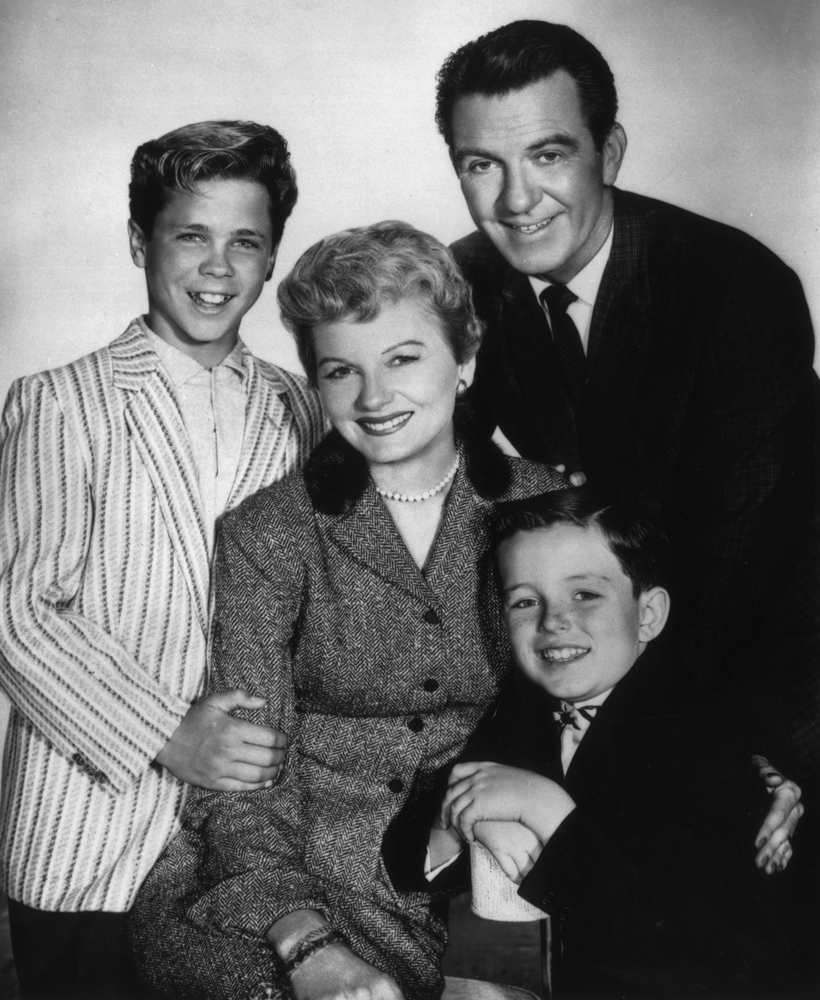Most domestic comedies in the 1950s portrayed an idealized version of family life and ignored social and political events.
Not all programs in the 1950s were afraid to tackle controversial social or political issues. In March 1954, journalist Edward R. Murrow broadcast an unflattering portrait of U.S. Senator Joseph McCarthy on his show See It Now. McCarthy, a member of the Senate Investigation Committee, had launched inquiries regarding potential Communist infiltration in U.S. institutions. Murrow thought that McCarthy’s aggressive tactics were a potential threat to civil liberties. His portrait cast the senator from Wisconsin in an unflattering light by pointing out contradictions in his speeches. This led to such an uproar that McCarthy was formally reprimanded by the U.S. Senate.Michael J. Friedman, “‘See It Now’: Murrow vs. McCarthy,” in Edward R. Murrow: Journalism at Its Best, publication of U.S. Department of State, June 1, 2008, http://www.america.gov/st/democracyhr-english/2008/June/20080601110244eaifas8.602542e-02.html.
Entertainment programs also tackled controversial issues. The long-running television western Gunsmoke, which aired on CBS from 1955 to 1975, flourished in a Cold War society, where U.S. Marshal Matt Dillon (James Arness) stood up to lawlessness in defense of civilization. The characters and community in Gunsmoke faced relevant social issues, including the treatment of minority groups, the meaning of family, the legitimacy of violence, and the strength of religious belief. During the 1960s, the show adapted to the desires of its viewing audience, becoming increasingly aware of and sympathetic to ethnic minorities, in tune with the national mood during the civil rights era. This adaptability helped the show to become the longest-running western in television history.
During the 1960s, television news broadcasts brought the realities of real-world events into people’s living rooms in vivid detail. The CBS Evening News with Walter Cronkite, which debuted in 1962, quickly became the country’s most popular newscast, and by the end of the decade, journalist Walter Cronkite was known as the most trusted man in America. Following John F. Kennedy’s election to the presidency at the beginning of the decade, the 1960s took an ominous turn. Shocked viewers tuned into Cronkite’s broadcast on November 22, 1963, to learn about the assassination of their president. During the next few days, viewers followed every aspect of the tragedy on television, from the tremor in Cronkite’s voice as he removed his glasses and announced the news of Kennedy’s death, to the frantic scenes from Dallas police headquarters where the assassin, Lee Harvery Oswald, was gunned down by nightclub owner Jack Ruby, to the thousands of mourners lining up next to the president’s flag-draped coffin.
Figure 9.9
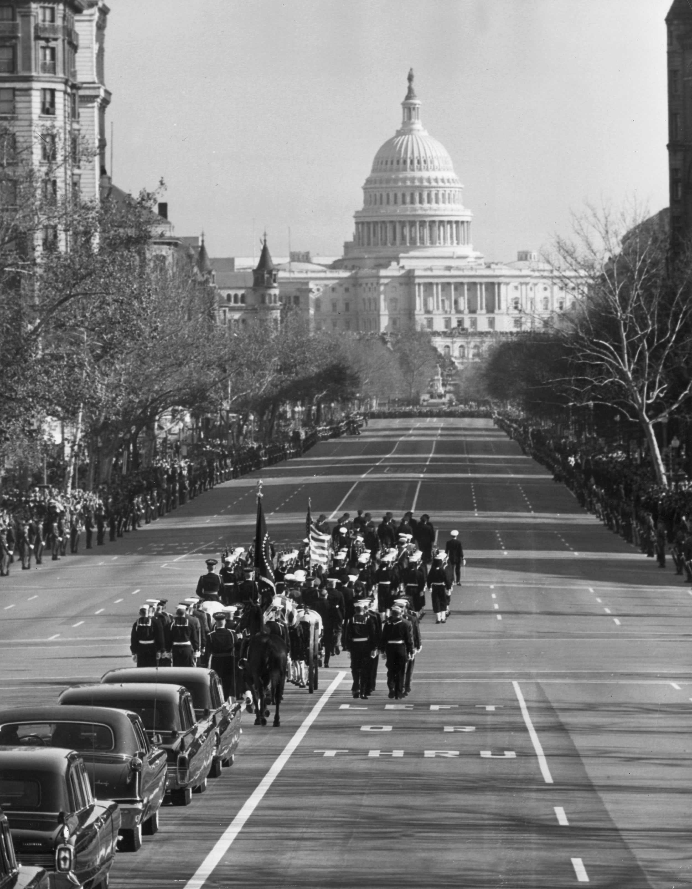Television began to play a major role in U.S. politics during the presidency of John. F. Kennedy.
Around the same time as Kennedy’s assassination, horrific images from Vietnam were streaming into people’s living rooms during the nation’s first televised war. With five camera crews on duty in the Saigon bureau, news crews captured vivid details of the war in progress. Although graphic images were rarely shown on network television, several instances of violence reached the screen, including a CBS report in 1965 that showed Marines lighting the thatched roofs of the village of Cam Ne with Zippo lighters and an NBC news report in 1968 that aired a shot of South Vietnamese General Nyuyen Ngoc Loan executing a captive on a Saigon street. Further images, of children being burned and scarred by napalm and prisoners being tortured, fueled the antiwar sentiments of many Americans. In addition to the devastation caused by the president’s death and the Vietnam War, Americans were also feeling the pressure of the Cold War—the clash between the United States and the Soviet Union in the years following World War II. This pressure was especially great during periods of tension throughout the 1950s and 1960s, such as the 1962 Cuban Missile Crisis, a confrontation that caused many people to fear nuclear war.
As a result of the intense stress faced by many Americans during the 1960s, broadcasters and viewers turned to escapist programs such as I Dream of Jeannie, a fantasy show about a 2,000-year-old genie who marries an astronaut, and Bewitched, a supernatural-themed show about a witch who tries to live as a surburban housewife. Both shows typified the situation comedyComedy genre, also known as a sitcom, that features a recurring cast of characters who resolve zany situations based on their everyday lives., or sitcom, a comedy genre featuring a recurring cast of characters who resolve zany situations based on their everyday lives. Other popular sitcoms in the 1960s included The Beverly Hillbillies, a show about a poor backwoods family who move to Beverly Hills, California, after finding oil on their land, and Gilligan’s Island, the ultimate escapist comedy about seven characters shipwrecked on an uncharted island. None of the 1960s sitcoms mentioned any of the political unease that was taking place in the outside world, providing audiences with a welcome diversion from real life. Other than an occasional documentary, television programming in the 1960s consisted of a sharp dichotomy between prime-time escapist comedy and hard news.
Figure 9.10
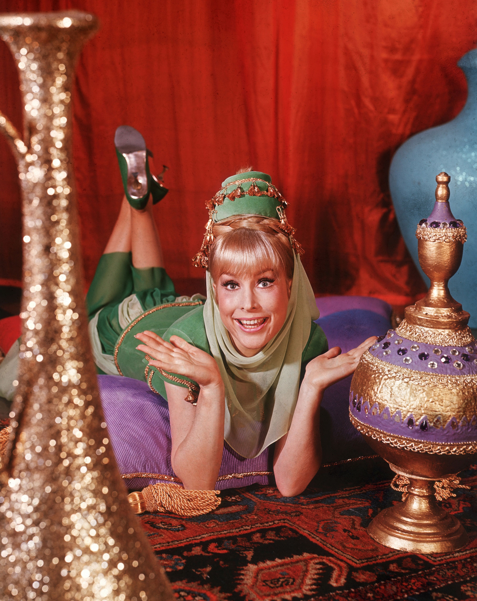Escapist sitcoms like I Dream of Jeannie provided Americans with a much-needed diversion from the stressful events of the 1960s.
During the 1970s, broadcasters began to diversify families on their shows to reflect changing social attitudes toward formerly controversial issues such as single parenthood and divorce. Feminist groups including the National Organization for Women (NOW), the National Women’s Political Caucus, and the Coalition of Labor Union Women pushed for equality on issues such as pay and encouraged women to enter the workforce. In 1972, the U.S. Supreme Court sanctioned women’s right to abortion, giving them control over their reproductive rights. Divorce rates skyrocketed during the 1970s, as states adopted no-fault divorce laws, and the change in family dynamics was reflected on television. Between 1972 and 1978, CBS aired the socially controversial sitcom Maude. Featuring a middle-aged feminist living with her fourth husband and divorced daughter, the show exploded the dominant values of the white middle-class domestic sitcom and its traditional gender roles. Throughout its 7-year run, Maude tackled social and political issues such as abortion, menopause, birth control, alcoholism, and depression. During its first four seasons, the show was in the top 10 in Nielsen ratings, illustrating the changing tastes of the viewing audience, who had come of age during the era of civil rights and Vietnam protests and developed a taste for socially conscious television. Other 1970s sitcoms took the same approach, including Maude’s CBS predecessor, All in the Family, which covered issues ranging from racism and homophobia to rape and miscarriage, and The Mary Tyler Moore Show, which reflected changing attitudes toward women’s rights by featuring television’s first never-married independent career woman as the central character. Even wholesome family favorite The Brady Bunch, which ran from 1969 to 1974, featured a non-nuclear family, reflecting the rising rates of blended families in American society.
Figure 9.11

The popularity of controversial shows like Maude reflected the changing cultural and social values of the 1970s.
In addition to changing family dynamics on sitcoms and other prime-time shows, variety and comedy sketch shows developed a political awareness in the 1970s that reflected audiences’ growing appetite for social and political commentary. Sketch comedyA series of short comedy scenes or vignettes that are often featured on variety shows, talk shows, or comedy shows. During the 1970s, comedy sketches that parodied American popular culture and politics grew in popularity. show Saturday Night Live (SNL) premiered on NBC in 1975 and has remained on air ever since. Featuring a different celebrity guest host every week and relatively unknown comedy regulars, the show parodies contemporary popular culture and politics, lambasting presidential candidates and pop stars alike. Earlier NBC sketch comedy show Laugh-In, which ran from 1968 to 1973, also featured politically charged material, though it lacked the satirical bite of later series such as SNL. By the end of the decade, television broadcasting reflected a far more politically conscious and socially aware viewing audience.
Until the mid-1980s, the top three networks (ABC, NBC, and CBS) dominated television broadcasting in the United States. However, as cable services gained popularity following the deregulation of the industry in 1984, viewers found themselves with a multitude of options. Services such as Cable News Network (CNN), Entertainment and Sports Programming Network (ESPN), and Music Television (MTV) profoundly altered the television landscape in the world of news, sports, and music. New markets opened up for these innovative program types, as well as for older genres such as the sitcom. During the 1980s, a revival of family sitcoms took place with two enormous hits: The Cosby Show and Family Ties. Both featured a new take on modern family life, with the mothers working outside of the home and the fathers pitching in with housework and parental duties. Despite their success on network television, sitcoms faced stiff competition from cable’s variety of choices. Between 1983 and 1994, weekly broadcast audience shares (a measure of the number of televisions in use that are tuned to a particular show) for network television dropped from 69 to 52, while cable networks’ shares rose from 9 to 26.Horace Newcomb, ed., Encyclopedia of Television (New York: Fitzroy Dearborn, 2004), 389.
With a growing number of households subscribing to cable television, concern began to grow about the levels of violence to which children were becoming exposed. In addition to regularly broadcast network programs, cable offered viewers the chance to watch films and adult-themed shows during all hours, many of which had far more violent content than normal network programming. One study found that by the time an average child leaves elementary school, he or she has witnessed 8,000 murders and more than 100,000 other acts of violence on television.Rea Blakey, “Study Links TV Viewing Among Kids to Later Violence,” CNN Health, March 28, 2002, http://archives.cnn.com/2002/HEALTH/parenting/03/28/kids.tv.violence/index.html. Although no conclusive links have been drawn between witnessing violence on television and carrying out violence in real life, the loosening boundaries regarding sexual and violent content on television is a persistent cause for concern for many parents. For more information on the social effects of violence in the media, please refer to Chapter 2 "Media Effects".
Although television viewership is growing, the vast number of cable channels and other, newer content delivery platforms means that audiences are thinly stretched. In recent years, broadcasters have been narrowing the focus of their programming to meet the needs and interests of an increasingly fragmented audience. Entire cable channels devoted to cooking, music, news, African American interests (see sidebar below), weather, and courtroom drama enable viewers to choose exactly what type of show they want to watch, and many news channels are further specialized according to viewers’ political opinions. This trend toward specialization reflects a more general shift within society, as companies cater increasingly to smaller, more targeted consumer bases. Business magazine editor Chris Anderson explains, “We’re leaving the watercooler era, when most of us listened, watched and read from the same relatively small pool of mostly hit content. And we’re entering the microculture era, when we are all into different things.”Marc Gunther, “The Extinction of Mass Culture, CNN Money, July 12, 2006, http://money.cnn.com/2006/07/11/news/economy/pluggedin_gunther.fortune/index.htm. Just as cable broadcasters are catering to niche markets, Internet-based companies such as Amazon.com and Netflix are taking advantage of this concept by selling large numbers of books, DVDs, and music albums with narrow appeal. Section 9.3 "Issues and Trends in the Television Industry" and Section 9.4 "Influence of New Technologies" of this chapter will cover the recent trends and issues of this era in television.
Launched in 1980, Black Entertainment Television (BET) was the first television network in the United States dedicated to the interests of African American viewers. The basic-cable franchise was created in Washington, DC, by media entrepreneur Robert Johnson, who initially invested $15,000 in the venture. Within a decade, he had turned the company into a multimillion-dollar enterprise, and in 1991 it became the first black-controlled company on the New York Stock Exchange. The company was sold to Viacom in 2003 for $3 billion.
Predating MTV by a year, BET initially focused on black-oriented music videos but soon diversified into original urban-oriented programs and public affairs shows. Although BET compensated somewhat for the underrepresentation of blacks on television (African Americans made up 8 percent of the prime-time characters on television in 1980 but made up 12 percent of the population), viewers complained about the portrayal of stereotypical images and inappropriate violent or sexual behavior in many of the rap videos shown by the network. In a 2004 interview with BET vice president of communications Michael Lewellen, former BET talk show host Bev Smith said, “We had videos on BET in those days that were graphic but didn’t proliferate as they seem to be doing now. That’s all you do seem to see are scantily dressed women who a lot of African American women are upset about in those videos.”The O’Reilly Factor, “Is Black Entertainment Television Taking a Disturbing Turn?” Fox News, May 26, 2004, http://www.foxnews.com/story/0,2933,120993,00.html. Despite the criticisms, BET remained the No. 1 cable network among blacks 18 to 34 in 2010 and retained an average audience of 524,000 total viewers during the first quarter of the year.Forbes, “BET Networks Unveils New African American Consumer Market Research and New Programming at 2010 Upfront Presentation,” April 14, 2010, http://www.forbes.com/feeds/prnewswire/2010/04/14/prnewswire201004141601PR_NEWS_USPR_____NE86679.html.
Despite entering a microculture era with a variety of niche markets, television remains the most important unifying cultural presence in the United States. During times of national crises, television news broadcasts have galvanized the country by providing real-time coverage of major events. When terrorists crashed planes into the World Trade Center towers in 2001, 24-hour television news crews provided stunned viewers around the world with continuous updates about the attack and its aftermath. Meanwhile, network blockbusters such as Lost and 24 have united viewers in shared anticipation, launching numerous blogs, fan sites, and speculative workplace discussions about characters’ fates.
Televised coverage of the news has had several cultural effects since the 1950s. Providing viewers with footage of the most intense human experiences, televised news has been able to reach people in a way that radio and newspapers cannot. The images themselves have played an important role in influencing viewer opinion. During the coverage of the civil rights movement, for example, footage of a 1963 attack on civil rights protesters in Birmingham, Alabama, showed police blasting African American demonstrators—many of them children—with fire hoses. Coupled with images of angry white segregationist mobs squaring off against black students, the news footage did much to sway public opinion in favor of liberal legislation such as the 1964 Voting Rights Act. Conversely, when volatile pictures of the race riots in Detroit and other cities in the late 1960s hit the airwaves, horrified viewers saw the need for a return to law and order. The footage helped create an anti-civil-rights backlash that encouraged many viewers to vote for conservative Republican Richard Nixon during the 1968 presidential election.
During the past few decades, mass-media news coverage has gone beyond swaying public opinion through mere imagery. Trusted centrist voices such as that of Walter Cronkite, who was known for his impartial reporting of some of the biggest news stories in the 1960s, have been replaced by highly politicized news coverage on cable channels such as conservative Fox News and liberal MSNBC. As broadcasters narrow their focus to cater to more specialized audiences, viewers choose to watch the networks that suit their political bias. Middle-of-the-road network CNN, which aims for nonpartisanship, frequently loses out in the ratings wars against Fox and MSNBC, both of which have fierce groups of supporters. As one reporter put it, “A small partisan base is enough for big ratings; the mildly interested middle might rather watch Grey’s Anatomy.”James Poniewozik, “CNN: Can a Mainstream News Outlet Survive?” Time, May 3, 2010, http://www.time.com/time/magazine/article/0,9171,1983901,00.html. Critics argue that partisan news networksNews networks that cater to niche political audiences by offering a right-wing or left-wing viewpoint rather than attempting to remain impartial. cause viewers to have less understanding of opposing political opinions, making them more polarized.
Table 9.1 Partisan Profile of Television News Audiences 2008
News Channel |
Republican (%) |
Democratic (%) |
Independent (%) |
|---|---|---|---|
Fox News |
39 |
33 |
22 |
Nightly Network |
22 |
45 |
26 |
MSNBC |
18 |
45 |
27 |
CNN |
18 |
51 |
23 |
NewsHour |
21 |
46 |
23 |
Source: “Partisanship and Cable News Audiences,” Oct. 30, 2009, Pew Research Center for the People & the Press, a project of the Pew Research Center.
The issue of whether television producers have a responsibility to promote particular social values continues to generate heated discussion. When the unmarried title character in the CBS series Murphy Brown—a comedy show about a divorced anchorwoman—got pregnant and chose to have the baby without any involvement from the father, then–Vice President Dan Quayle referenced the show as an example of degenerating family values. Linking the 1992 Los Angeles riots to a breakdown of family structure and social order, Quayle lambasted producers’ poor judgment, saying, “It doesn’t help matters when prime-time TV has Murphy Brown, a character who supposedly epitomizes today’s intelligent, highly paid professional woman, mocking the importance of fathers by bearing a child alone, and calling it just another ‘lifestyle choice.’”Time, “Dan Quayle vs. Murphy Brown,” June 1, 1992, http://www.time.com/time/magazine/article/0,9171,975627,00.html. Quayle’s outburst sparked lively debate between supporters and opponents of his viewpoint, with some praising his outspoken social commentary and others dismissing him as out of touch with America and its growing number of single mothers.
Similar controversy arose with the portrayal of openly gay characters on prime-time television shows. When the lead character on the ABC sitcom Ellen came out in 1997 (2 weeks after Ellen DeGeneres, the actress who played the role, announced that she was gay), she became the first leading gay character on both broadcast and cable networks. The show proved to be a test case for the nation’s tolerance of openly gay characters on prime-time television and became the subject of much debate. Embraced by liberal supporters and lambasted by conservative objectors (evangelical Baptist minister Jerry Falwell infamously dubbed her “Ellen DeGenerate”), both the actress and the show furthered the quest to make homosexuality acceptable to mainstream audiences. Although Ellen was canceled the following year (amid disagreements with producers about whether it should contain a parental advisory warning), DeGeneres successfully returned to television in 2003 with her own talk show. Subsequent shows with prominent gay characters were quick to follow in Ellen’s footsteps. According to the Gay & Lesbian Alliance Against Defamation (GLAAD), 18 lesbian, gay, bisexual, or transgender characters accounted for 3 percent of scripted series regulars in the 2009–2010 broadcast television schedule, up from 1.3 percent in 2006.Wendy Mitchell, “GLAAD Report: Gay Characters on Network TV Still on the Rise,” Entertainment Weekly, September 30, 2009, http://hollywoodinsider.ew.com/2009/09/30/glaad-report-gay-characters-on-rise/.
Emerging out of the 1948 television series Candid Camera, in which people were secretly filmed responding to elaborate practical jokes, reality televisionTelevision that attempts to capture unscripted, real-life situations. Many reality television shows are contrived or deliberately manufactured by producers. aimed to capture real, unscripted life on camera. The genre developed in several different directions, from home-video clip shows (America’s Funniest Home Videos, America’s Funniest People) to true-crime reenactment shows (America’s Most Wanted, Unsolved Mysteries) to thematic shows based on professions of interest (Project Runway, Police Women of Broward County, Top Chef). Near the turn of the millennium, the genre began to lean toward more voyeuristic shows, such as MTV’s The Real World, an unscripted “documentary” that followed the lives of seven strangers selected to live together in a large house or apartment in a major city. The show drew criticisms for glamorizing bad behavior and encouraging excessive drinking and casual sex, although its ratings soared with each successive controversy (a trend that critics claim encouraged producers to actively stage rating-grabbing scenarios). During the late 1990s and 2000s, a wave of copycat reality television shows emerged, including the voyeuristic series Big Brother, which filmed a group of strangers living together in an isolated house full of cameras in an attempt to win large amounts of cash, and Survivor, a game show in which participants competed against each other by performing endurance challenges on an uninhabited island. Survivor’s success as the most popular show on television in the summer of 2000 ensured the continued growth of the reality television genre, and producers turned their attention to reality dating shows such as The Bachelor, Temptation Island, and Dating in the Dark. Cheap to produce, with a seemingly never-ending supply of willing contestants and eager advertising sponsors, reality television shows continue to bring in big ratings. As of 2010, singing talent competition American Idol is television’s biggest revenue generator, pulling in $8.1 million in advertising sales every 30 minutes it is on the air.Paul Bond, “‘Idol’ Listed as TV’s Biggest Revenue Generator,” Hollywood Reporter, May 5, 2010, http://www.hollywoodreporter.com/hr/content_display/news/e3i8f1f42046a622bda2d602430b16d3ed9.
Figure 9.12
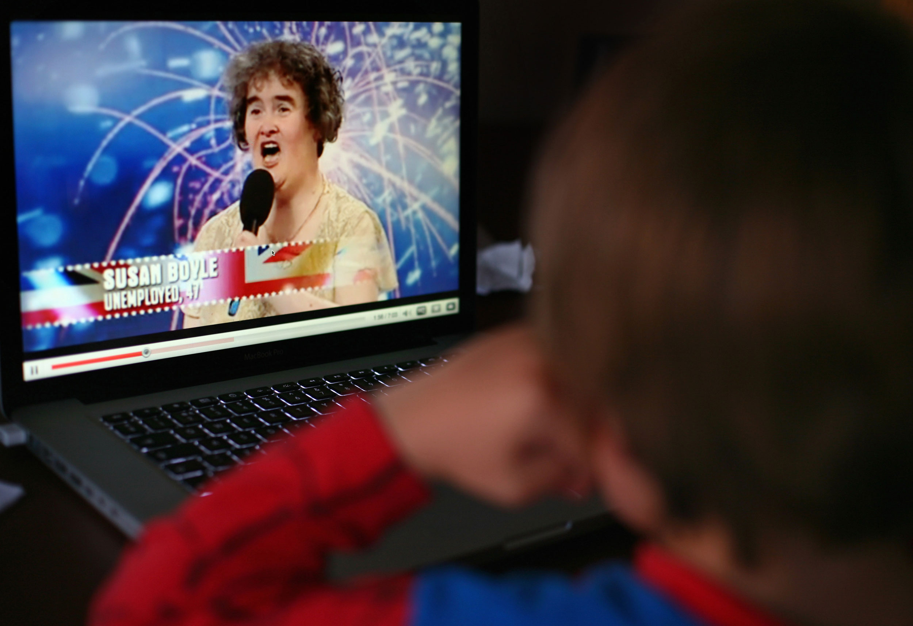The stress of appearing on reality television shows has proved detrimental to some contestants’ health. Britain’s Got Talent star Susan Boyle suffered a nervous breakdown in 2009.
Reality television has created the cultural phenomenon of the instant celebrity. Famous for simply being on the air, reality show contestants are extending their 15 minutes in the spotlight. Kate Gosselin, star of Jon & Kate Plus 8, a cable television show about a couple who have eight children, has since appeared in numerous magazine articles, and in 2010 she starred on celebrity reality dance show Dancing with the Stars. Survivor contestant Elisabeth Hasselbeck became a co-host on television talk show The View, and several American Idol contestants (including Kelly Clarkson and Carrie Underwood) have become household names. The genre has drawn criticism for creating a generation that expects to achieve instant wealth without having to try very hard and also for preying on vulnerable people whom critics call “disposable.” When Britain’s Got Talent star Susan Boyle suffered a public meltdown in 2009 after the stress of transitioning from obscurity to stardom in an extremely short time period, the media began to point out the dangers of reality television. In 2009, TheWrap.com investigated the current lives of former stars of reality shows such as The Contender, Paradise Hotel, Wife Swap, and Extreme Makeover and found that at least 11 participants had committed suicide as an apparent result of their appearances on screen.Guy Adams, “Lessons From America on the Dangers of Reality Television,” Independent (London), June 6, 2009, http://www.independent.co.uk/news/world/americas/lessons-from-america-on-the-dangers-of-reality-television-1698165.html; Frank Feldlinger, “TheWrap Investigates: 11 Players Have Committed Suicide,” TheWrap, http://www.thewrap.com/television/article/thewrap-investigates-11-players-have-committed-suicide-3409.
Please respond to the following short-answer writing prompts. Each response should be a minimum of one paragraph.
When television was in its infancy, producers modeled the new medium on radio. Popular radio shows such as police drama Dragnet and western cowboy series Gunsmoke were adapted for television, and new television shows were sponsored by single advertisers, just as radio shows had been. Television was dominated by three major networks—NBC, ABC, and CBS—and these networks accounted for more than 95 percent of all prime-time viewing until the late 1970s. Today, the television industry is far more complex. Programs are sponsored by multiple advertisers; programming is controlled by major media conglomerates; and the three major networks no longer dominate the airwaves but instead share their viewers with numerous cable channels. Several factors account for these trends within the industry, including technological developments, government regulations, and the creation of new networks.
Early television programs were often developed, produced, and supported by a single sponsor, which sometimes reaped the benefits of having its name inserted into the program’s title—Colgate Comedy Hour, Camel Newsreel, Goodyear TV Playhouse. However, as production costs soared during the 1950s (a single one-hour television show cost a sponsor about $35,000 in 1952 compared with $90,000 at the end of the decade), sponsors became increasingly unable to bear the financial burden of promoting a show single-handedly. This suited the broadcast networks, which disliked the influence sponsors exerted over program content. Television executives, in particular NBC’s Sylvester L. “Pat” Weaver, advocated the magazine concept, in which advertisers purchased one- or two-minute blocks rather than the entire program, just as magazines contained multiple advertisements from different sponsors. The presence of multiple sponsors meant that no one advertiser controlled the entire program.
Figure 9.13
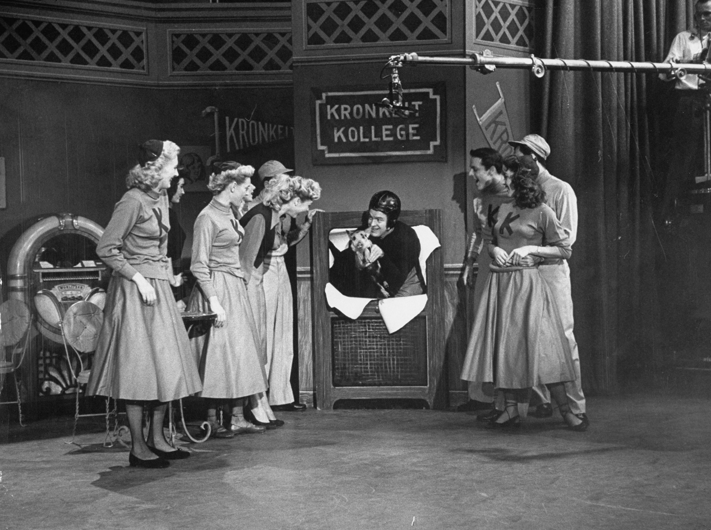Many sponsors believed that if viewers identified their favorite shows, such as the Colgate Comedy Hour, with a sponsor, they would be more likely to purchase the product being advertised.
Although advertising agencies relinquished control of production to the networks, they retained some influence over the content of the programs they sponsored. As one executive commented, “If my client sells peanut butter and the script calls for a guy to be poisoned eating a peanut butter sandwich, you can bet we’re going to switch that poison to a martini.”Horace Newcomb, ed., Encyclopedia of Television (New York: Fitzroy Dearborn, 2004), 2170. Sponsors continue to influence program content indirectly by financially supporting shows they support and pulling funding from those they do not. For example, in 1995, pharmaceutical giant Procter & Gamble, the largest television advertiser, announced it would no longer sponsor salacious daytime talk shows. The company provided producers with details about its guidelines, pulling out of shows it deemed offensive and supporting shows that dealt with controversial subject matter responsibly. Communications heavyweight AT&T took a similar path, reviewing shows after they were taped but before they aired in order to make decisions about corporate sponsorship on an individual basis.Advertising Age, “Speak Up About Talk Shows,” November 27, 1995, http://adage.com/article?article_id=84233. In 2009, advertisers used their financial might to take a stand against Fox News host Glenn Beck, who offended viewers and sponsors alike with his incendiary comments that President Obama was a “racist” and had a “deep-seated hatred for white people.” Sponsors of the Glenn Beck television talk show began to remove advertising spots from the program in protest of Beck’s comments. A spokeswoman for Progressive car insurance said, “We place advertising on a variety of programming with the goal of reaching a broad range of insurance consumers who might be interested in our products. We also seek to avoid advertising on programming that our customers or potential customers may find extremely offensive.”William Spain, “Advertisers Deserting Fox News’ Glenn Beck,” MarketWatch, August 14, 2009, http://www.marketwatch.com/story/advertisers-deserting-fox-news-glenn-beck-2009-08-14. Other shows whose advertisers have pulled ads include NBC’s long-running sketch comedy show Saturday Night Live, BET’s Hot Ghetto Mess, and ABC’s Ellen sitcom.
Corporate sponsorship does not just affect network television. Even public television has become subject to the influence of advertising. Established in 1969, Public Broadcasting ServicePublic television network established in 1969. The service was intended to enable universal access to television for viewers in rural areas and viewers who could not afford to pay for private television services. (PBS) developed out of a report by the Carnegie Commission on Educational Television, which examined the role of educational, noncommercial television on society. The report recommended that the government finance public television in order to provide diversity of programming during the network era—a service created “not to sell products” but to “enhance citizenship and public service.”Michael P. McCauley, Public Broadcasting and the Public Interest (Armonk, NY: M.E. Sharpe, 2003), 239. Public television was also intended to provide universal access to television for viewers in rural areas or viewers who could not afford to pay for private television services. PBS focused on educational program content, targeting viewers who were less appealing to the commercial networks and advertisers, such as the over-50 age demographic and children under 12.
The original Carnegie Commission report recommended that Congress create a federal trust fund based on a manufacturer’s excise tax on the sale of television sets to finance public television. Following intense lobbying by the National Association of Broadcasters, the proposal was removed from the legislation that established the service. As a result, public television subsists on viewer contributions and federal funding and the latter has been drastically reduced in recent years. Although a 2007 proposal by President George W. Bush to eliminate more than half of the federal allocation to public broadcasting ($420 million out of $820 million) was overturned, PBS has become increasingly dependent on corporate sponsorship to stay afloat. By 2006, corporate sponsors funded more than 25 percent of all public television. Sponsorship has saved many programs that would otherwise have been lost, but critics have bemoaned the creeping commercialism of public television. When PBS began selling banner advertisements on its website in 2006, Gary Ruskin, executive director of consumer group Commercial Alert, commented, “It’s just one more intrusion of the commercial ethos into an organization that was supposed to be firmly noncommercial. The line between them and the commercial networks is getting fuzzier and fuzzier.”Matea Gold, “Marketing Tie-ins Finding Their Way to PBS Sponsors,” Baltimore Sun, October 23, 2006, http://articles.baltimoresun.com/2006-10-23/features/0610230151_1_pbs-corporate-underwriters-public-television. Despite such criticisms, the drop in federal funding has forced public television executives to seek more creative ways of obtaining financial backing—for example, through online banner ads. In 2009, PBS shortened the length of time companies were required to sponsor some programs in an effort to encourage advertisers.Brian Stelter, “PBS to Shorten Time Commitments for Sponsorships,” New York Times, May 7, 2009, http://www.nytimes.com/2009/05/08/business/media/08adco.html. As of 2010, the future of PBS remained uncertain. With better-funded cable channels offering niche-interest shows that were traditionally public television’s domain (BBC nature series Planet Earth was shown on the Discovery Channel, while historical dramas John Adams and The Tudors are shown on premium cable channels HBO and Showtime), PBS is left to rely on shows that have been around for decades, such as Nova and Nature, to attract audiences.Charles McGrath, “Is PBS Still Necessary?” New York Times, February 17, 2008, http://www.nytimes.com/2008/02/17/arts/television/17mcgr.html. Only time will tell how PBS fares in the face of competition.
The period between 1950 and 1970 is historically recognized as the network eraThe period between 1950 and 1970, during which network television dominated the airwaves and accounted for more than 95 percent of prime-time viewing.. Aside from a small portion of airtime controlled by public television, the three major networks (known as the Big Three) dominated the television industry, collectively accounting for more than 95 percent of prime-time viewing. In 1986, Rupert Murdoch, the head of multinational company News Corp, launched the Fox network, challenging the dominance of the Big Three. In its infancy, Fox was at best a minor irritation to the other networks. With fewer than 100 affiliated stationsA local television or radio station associated with a particular broadcast network that carries some or all of that network’s programming. (the other networks all had more than 200 affiliates each), reaching just 80 percent of the nation’s households (compared with the Big Three’s 97 percent coverage rate), and broadcasting just one show (The Late Show Starring Joan Rivers), Fox was barely a consideration in the ratings war. During the early 1990s, these dynamics began to change. Targeting young viewers and black audiences with shows such as Beverly Hills 90210, Melrose Place, In Living Color, and The Simpsons, Fox began to establish itself as an edgy, youth-oriented network. Luring affiliates away from other networks to increase its viewership, Fox also extended its programming schedule beyond the initial 2-night-a-week broadcasts. By the time the fledgling network acquired the rights to National Football League (NFL) games with its $1.58 billion NFL deal in 1994, entitling it to 4 years of NFL games, Fox was a worthy rival to the other three broadcast networks. Its success turned the Big Three into the Big Four. In the 1994–1995 television season, 43 percent of U.S. households were watching the Big Four at any given moment during prime time.James Poniewozik, “Here’s to the Death of Broadcast,” Time, March 26, 2009, http://www.time.com/time/magazine/article/0,9171,1887840,00.html.
Fox’s success prompted the launch of several smaller networks in the mid-1990s. UPN (owned by Paramount, recently acquired by Viacom) and WB (owned by media giant Time Warner) both debuted in January 1995. Using strategies similar to Fox, the networks initially began broadcasting programs 2 nights a week, expanding to a 6-day schedule by 2000. Targeting young and minority audiences with shows such as Buffy the Vampire Slayer, Moesha, Dawson’s Creek, and The Wayans Bros., the new networks hoped to draw stations away from their old network affiliations. However, rather than repeating the success of Fox, UPN and WB struggled to make an impact. Unable to attract many affiliate stations, the two fledgling networks reached fewer households than their larger rivals because they were unobtainable in some smaller cities. High start-up costs, relatively low audience ratings, and increasing production expenses spelled the end of the “netletsA term coined by Variety magazine for minor-league networks that lack a full week’s worth of programming.,” a term coined by Variety magazine for minor-league networks that lacked a full week’s worth of programming. After losing $1 billion each, parent companies CBS (having split from Viacom) and Time Warner agreed to merge UPN and WB, resulting in the creation of the CW network in 2006. Targeting the desirable 18–34 age group, the network retained the most popular shows from before the merger—America’s Next Top Model and Veronica Mars from UPN and Beauty and the Geek and Smallville from WB—as well as launching new shows such as Gossip Girl and The Vampire Diaries. Despite its cofounders’ claims that the CW would be the “fifth great broadcast network,” the collaboration got off to a shaky start. Frequently outperformed by Spanish-language television network Univision in 2008 and with declining ratings among its target audience, critics began to question the future of the CW network.Melissa Grego, “How The CW Stays Undead,” Broadcasting and Cable, February 1, 2010, http://www.broadcastingcable.com/article/446733-How_The_CW_Stays_Undead.php. However, the relative success of shows such as Gossip Girl and 90210 in 2009 gave the network a foothold on its intended demographic, quashing rumors that co-owners CBS Corporation and Warner Bros. might disband the network. Warner Bros. Television Group President Bruce Rosenblum said, “I think the built-in assumption and the expectation is that the CW is here to stay.”Scott Collins, “With Ratings Comeback, has CW Finally Turned the Corner?” Los Angeles Times, April 7, 2009, http://latimesblogs.latimes.com/showtracker/2009/04/last-week-the-cw-scored-its-best-ratings-in-nearly-five-months-ordinarily-this-might- not-sound-like-huge-news-but-cw-is-a.html.
Figure 9.14
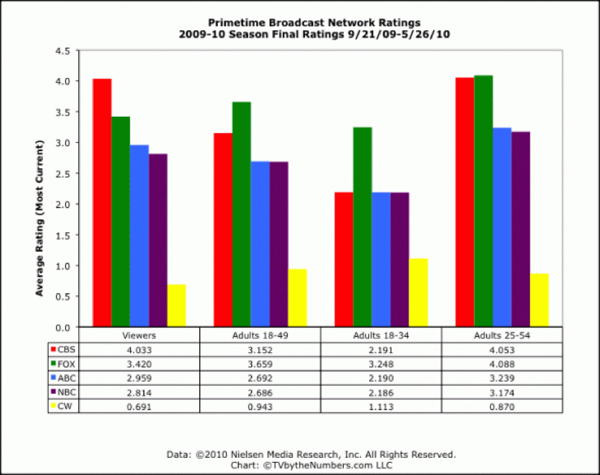Despite launching several new shows geared toward its target demographic, the CW remains fifth in the network rankings.
A far greater challenge to network television than the emergence of smaller competitors was the increasing dominance of cable television. Between 1994 and 2009, the percentage of U.S. households watching the Big Four networks during prime time plummeted from 43 percent to 27 percent.James Poniewozik, “Here’s to the Death of Broadcast,” Time, March 26, 2009, http://www.time.com/time/magazine/article/0,9171,1887840,00.html. Two key factors influenced the rapid growth of cable television networks: industry deregulationThe removal of government regulations from an industry. Government deregulation of the cable industry in the 1980s enabled its extensive growth throughout the next two decades. and the use of satellites to distribute local television stations around the country.
During the 1970s, the growth of cable television was restricted by FCC regulations, which protected broadcasters by establishing franchising standards and enforcing anti-siphoning rules that prevented cable from taking sports and movie programming away from the networks. However, during the late 1970s, a court ruled that the FCC had exceeded its authority, and the anti-siphoning rules were repealed. This decision paved the way for the development of cable movie channels, contributing to the exponential growth of cable in the 1980s and 1990s. Further deregulation of cable in the 1984 Cable Communications Policy Act removed restrictions on cable rates, enabling operators to charge what they wanted for cable services as long as there was effective competition to the service (a standard that over 90 percent of all cable markets could meet). Other deregulatory policies during the 1980s included the eradication of public-service requirements and the elimination of regulated amounts of advertising in children’s programming, expanding the scope of cable channel stations. Deregulation was intended to encourage competition within the industry but instead enabled local cable companies to establish monopolies all over the country. In 1989, U.S. Senator Al Gore of Tennessee commented, “Precipitous rate hikes of 100 percent or more in one year have not been unusual since cable was given total freedom to charge whatever the market will bear…. Since cable was deregulated, we have also witnessed an extraordinary concentration of control and integration by cable operators and program services, manifesting itself in blatantly anticompetitive behavior toward those who would compete with existing cable operators for the right to distribute services.”Adam M. Zaretsky, “The Cable TV Industry and Regulation,” Regional Economist, July 1995, http://research.stlouisfed.org/publications/regional/95/07/CableTV.pdf. The FCC reintroduced regulations for basic cable rates in 1992, by which time more than 56 million households (over 60 percent of the households with televisions) subscribed to a cable service.
The growth of cable television was also assisted by a national satellite distribution system. Pioneered by Time Inc., which founded cable network company HBO, the corporation used satellite transmission in 1975 to beam the “Thrilla from Manila”—the historic heavyweight boxing match between Muhammad Ali and Joe Frazier—into people’s homes. Shortly afterward, entrepreneur Ted Turner, owner of independent Atlanta-based station WTBS, uplinked his station’s signal onto the same satellite as HBO, enabling cable operators to downlink the station on one of their channels. Initially provided free to subscribers to encourage interest, the station offered television reruns, wrestling, and live sports from Atlanta. Having created the first “superstation,” Turner expanded his realm by founding 24-hour news network CNN in 1980. At the end of the year, 28 national programming services were available, and the cable revolution had begun. Over the next decade, the industry underwent a period of rapid growth and popularity, and by 1994 viewers could choose from 94 basic and 20 premium cable services.
Figure 9.15
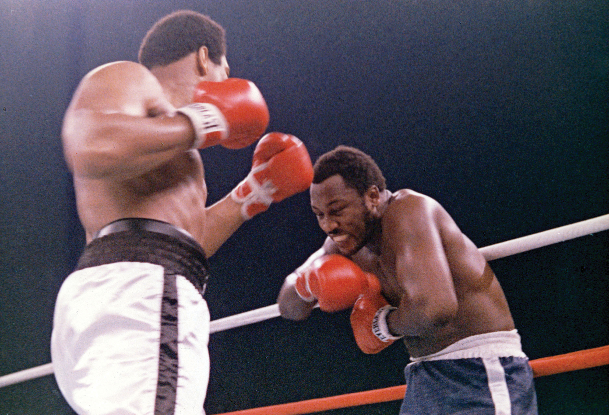The 1975 “Thrilla from Manila” was one of the first offerings by HBO.
Because the proliferation of cable channels provided viewers with so many choices, broadcasters began to move away from mass-oriented programming in favor of more targeted shows. Whereas the broadcast networks sought to obtain the widest audience possible by avoiding programs that might only appeal to a small minority of viewers, cable channels sought out niche audiences within specific demographic groups—a process known as narrowcastingThe process of seeking out a niche audience within a particular demographic group as opposed to seeking the widest possible audience.. In much the same way that specialist magazines target readers interested in a particular sport or hobby, cable channels emphasize one topic, or group of related topics, that appeal to specific viewers (often those who have been neglected by broadcast television). People interested in current affairs can tune into CNN, MSNBC, Fox News, or any number of other news channels, while those interested in sports can switch on ESPN or TSN (The Sports Network). Other channels focus on music, shopping, comedy, science fiction, or programs aimed at specific cultural or gender groups. Narrowcasting has proved beneficial for advertisers and marketers, who no longer need to time their communications based on the groups of people who are most likely to watch television at certain times of the day. Instead, they concentrate their approach on subscription channels that appeal directly to their target consumers.
The popularity of cable television has forced the Big Four networks to rethink their approach to programming over the past three decades. Because of the narrowcasting mode of distribution and exhibition, cable television has offered more explicit sexual and violent content than broadcast television does. To compete for cable channels’ viewing audience, broadcast networks have loosened restrictions on graphic material and now frequently feature partial nudity, violence, and coarse language. This has increased viewership of mildly controversial shows such as CSI, NCIS, Grey’s Anatomy, and Private Practice, while opening the networks to attacks from conservative advocacy groups that object to extreme content.
The broadcast networks are increasingly adapting narrowcasting as a programming strategy. Newer networks, such as the CW, deliberately target the 18–34 age group (women in particular). Since its inception, the CW has replaced urban comedies such as Everybody Hates Chris with female-oriented series such as Gossip Girl and The Vampire Diaries. Older networks group similar programs that appeal to specific groups in adjacent time slots to retain viewers for as long as possible. For example, ABC sitcoms Modern Family and Cougar Town run back to back, while Fox follows reality police series Cops with crime-fighting show America’s Most Wanted.
Despite responding to challenges from cable, the broadcast networks’ share of the total audience has declined each year. Between 2000 and 2009, the networks saw their numbers drop by around 8 million viewers.Robert Bianco, “The Decade in Television: Cable, the Internet Become Players,” USA Today, December 29, 2009, http://www.usatoday.com/life/television/news/2009-12-28-decadeTV28_CV_N.htm.
Figure 9.16
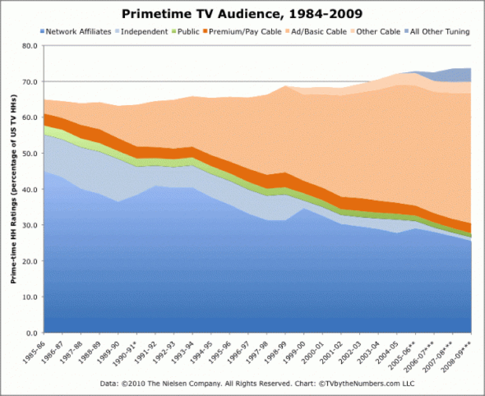Increased competition from cable channels has caused a steady decline in the networks’ audience ratings.
Please respond to the following short-answer writing prompts. Each response should be a minimum of one paragraph.
Choose one of the Big Four networks and print out its weekly programming schedule. Watch the network’s prime-time programs over the course of a week, noting the target demographic for each show. Observe the advertising sponsors that support each show and compare how the products and services fit with the intended audience.
The experience of watching television is rapidly changing with the progression of technology. No longer restricted to a limited number of channels on network television, or even to a television schedule, viewers are now able to watch exactly what they want to watch, when they want to watch it. Non-television delivery systems such as the Internet, which enables viewers to download traditional television shows onto a computer, laptop, iPod, or smartphone, are changing the way people watch television. Meanwhile, cable and satellite providers are enabling viewers to purchase television shows to watch at their convenience through the use of video-on-demand services, changing the concept of prime-time viewing. Digital video recording (DVR) systems such as TiVo, which enable users to record particular shows onto the system’s computer memory, are having a similar effect.
Although television audiences are becoming increasingly fragmented, they are also growing because of the convenience and availability of new technology. In 2009, Nielsen’s Three Screen Report, which encompassed television, cell phone, and computer usage, reported that the average viewer watched more than 151 hours of television per month, up 3.6 percent from the previous year.Alana Semuels, “Television Viewing at All-Time High,” Los Angeles Times, February 24, 2009, http://articles.latimes.com/2009/feb/24/business/fi-tvwatching24. Viewers might not all be sitting together in the family room watching prime-time shows on network television between 7 and 11 p.m., but they are watching.
The origins of satellite televisionTelevision system delivered by means of a communications satellite and received by a satellite dish and set-top box. can be traced to the space race of the 1950s, when the United States and the Soviet Union were competing to put the first satellite into space. Soviet scientists accomplished the goal first with the launch of Sputnik in 1957, galvanizing Americans (who were fearful of falling behind in space technology during the Cold War era) into intensifying their efforts and resulting in the creation of the National Aeronautics and Space Administration (NASA) in 1958. AT&T launched Telstar, the first active communications satellite, on July 10, 1962, and the first transatlantic television signal—a black-and-white image of a U.S. flag waving in front of the Andover Earth Station in western Maine—transmitted that same day. However, the television industry did not utilize satellites for broadcasting purposes until the late 1970s when PBS introduced Public Television Satellite Service. Satellite communication technology caught on and was used by broadcasters as a distribution method between 1978 and 1984 by pioneering cable channels such as HBO, TBS (Turner Broadcasting System), and CBN (Christian Broadcasting Network, later the Family Channel).
The trouble with early satellite television systems was that once people purchased a satellite system, they had free access to every basic and premium cable service that was broadcasting via satellite signals. The FCC had an “open skies” policy, under which users had as much right to receive signals as broadcasters had the right to transmit them. Initially, the satellite receiver systems were prohibitively expensive for most families, costing more than $10,000. However, as the price of a satellite dish dropped toward the $3,000 mark in the mid-1980s, consumers began to view satellite television as a cheaper, higher-quality alternative to cable. Following the initial purchase of a dish system, the actual programming—consisting of more than 100 cable channels—was free. Cable broadcasters lobbied the government for legal assistance and, under the 1984 Cable Act, were allowed to encrypt their satellite feeds so that only people who purchased a decoder from a satellite provider could receive the channel.
Following the passing of the Cable Act, the satellite industry took a dramatic hit. Sales of the popular direct-to-home (DTH)A television system in which subscribers receive television signals directly from geostationary satellites. DTH was a precursor to direct broadcast satellite (DBS). systems (precursors to the smaller, more powerful direct broadcast satellite systems introduced in the 1990s) that had offered free cable programming slumped from 735,000 units in 1985 to 225,000 units a year later, and around 60 percent of satellite retailers went out of business. The satellite industry’s sudden drop in popularity was exacerbated by large-scale anti-dish advertising campaigns by cable operators, depicting satellite dishes as unsightly. Although sales picked up in the late 1980s with the introduction of integrated receiving and decoding units and the arrival of program packages, which saved consumers the time and effort of signing up for individual programming services, the growth of the satellite industry was stunted by piracy—the theft of satellite signals. Of the 1.9 million units manufactured between 1986 and 1990, fewer than 500,000 were receiving signals legally.Harry W. Thibedeau, “DTH Satellite TV: Timelines to the Future,” Satellite Broadcasting & Communications Association, 2000, http://satelliteretailers.com/dish_installation.html. The problem was ultimately solved by the actions of the Satellite Broadcasting and Communications Association (SBCA)Trade association created in 1986 that established an antipiracy task force in an effort to prevent the theft of satellite signals., an association created in 1986 by the merger of two trade organizations—the Society of Private and Commercial Earth Stations (SPACE) and the Direct Broadcast Satellite Association (DBSA). SPACE was composed of manufacturers, distributors, and retailers of direct-to-home systems, and DBSA represented companies interested in direct broadcast satellite systems. The SBCA set up an antipiracy task force, aggressively pursuing illegal hackers with the FBI’s help.
Once the piracy problem was under control, the satellite industry could move forward. In 1994, four major cable companies launched a first-generation direct broadcast satellite (DBS)A small-dish satellite-delivered program service specifically intended for home reception. system called PrimeStar. The system, a small-dish satellite-delivered program service specifically intended for home reception, was the first successful attempt to enter the market in the United States. Within a year, PrimeStar was beaming 67 channels into 70,000 homes for a monthly fee of $25 to $35 (in addition to a hardware installation fee of $100 to $200). By 1996, competing companies DirecTV and the EchoStar Dish Network had entered the industry, and Dish Network’s cheaper prices were forcing its competitors to drop their fees. DirecTV acquired PrimeStar’s assets in 1999 for around $1.82 billion, absorbing its rival’s 2.3 million subscribers.Sandeep Junnarker, “DirecTV to Buy Rival PrimeStar’s Assets,” CNET, January 22, 1999, http://news.cnet.com/DirecTV-to-buy-rival-Primestars-assets/2100-1033_3-220509.html.
Figure 9.17
Subscribers of DBS receive signals from geostationary satellites that are broadcast in digital format at microwave frequency and intercepted by a satellite dish. A converter next to the television produces output that can be viewed on the television receiver.
As of 2010, the two biggest players in the satellite television industry are DirecTV and Dish Network. Assisted by the passing of the Satellite Television Home Viewers Act in 1999, which enabled satellite providers to carry local television stations (putting them on equal footing with cable television), both companies have grown rapidly over the past decade. In the first quarter of 2010, DirecTV boasted 18.6 million subscribers, placing it ahead of its rival, Dish Network, which reported a total of 14.3 million subscribers.Franklin Paul, “Dish Network Subscriber Gain, Profit Beat Street,” Reuters, May 10, 2010, http://www.reuters.com/article/idUSTRE6492MW20100510. Dish courts customers who have been hit by the economic downturn, aggressively cutting its prices and emphasizing its low rates. Conversely, DirecTV targets affluent consumers, emphasizing quality and choice in its advertising campaigns and investing in advanced services and products such as multiroom viewing (enabling a subscriber to watch a show in one room, pause it, and continue watching the same show in another room) to differentiate itself from rival satellite and cable companies.
Since the 1999 legislation put satellite television in direct competition with cable, the major satellite companies have increasingly pitted themselves against cable broadcasters, offering consumers numerous incentives to switch providers. One of these incentives is the addition of premium networks for satellite subscribers in the same vein as premium cable channel HBO. In 2005, DirecTV expanded its 101 Network channel to include original shows, becoming the first satellite station to air first episodes of a broadcast television series with NBC daytime soap opera Passions in 2007. The station aired first-run episodes of football drama series Friday Night Lights in 2008 and set its sights on the male over-35 demographic by obtaining syndication rights to popular HBO series Oz and Deadwood a year later. Commenting on the satellite company’s programming plans, executive vice president for entertainment for DirecTV Eric Shanks said, “We’d like to become a pre-cable window for these premium channels.”Bill Carter, “DirecTV Raises Its Sights for a Channel,” New York Times, January 23, 2009, http://www.nytimes.com/2009/01/24/business/media/24direct.html. In other words, the company hopes to purchase HBO shows such as Sex and the City before HBO sells the series to basic-cable channels like TBS.
In another overt bid to lure cable customers over to satellite television, both DirecTV and Dish Network offer a number of comprehensive movies and sports packages, benefiting from their additional channel capacity (satellite television providers typically offer around 350 channels, compared with 180 channels on cable) and their ability to receive international channels often unavailable on cable. In the mid-2000s, the satellite companies also began encroaching on cable television’s domination of bundled packages, by offering all-in-one phone, Internet, and television services. Despite being ideally suited to offering such packages with their single telecommunications pipe into the house, cable companies such as Comcast, Cox, and Time Warner had developed a reputation for offering poor service at extortionate prices. In the first three quarters of 2004, the eight largest cable providers (with the exception of bankrupt Adelphia) lost 552,000 basic-cable subscribers. Between 2000 and 2004, cable’s share of the television market fell from 66 percent to 62 percent, while the number of U.S. households with satellite television increased from 12 percent to 19 percent.Ken Belson, “Cable’s Rivals Lure Customers With Packages,” New York Times, November 22, 2004, http://www.nytimes.com/2004/11/22/technology/22satellite.html. Despite reports that cash-strapped consumers are switching off pay-TV services to save money during strained economic times, satellite industry revenues have risen steadily over the past decade.
Over the past two decades, the viewing public has become increasingly fragmented as a result of growing competition between cable and satellite channels and traditional network television stations. Now, television audiences are being presented with even more options. Digital video recorders (DVRs) like TiVo allow viewers to select and record shows they can watch at a later time. For example, viewers can set their DVRs to record all new (or old) episodes of the show Deadliest Catch and then watch the recorded episodes whenever they have free time.
DVRs can be used by advertisers to track which shows are being viewed. DVRs are even capable of targeting viewers with specific ads when they decide to watch their recorded program. In 2008, consumer groups battled with cable companies and lawmakers to protect the privacy of viewers who did not wish to be tracked this way, causing Nielsen to make tracking optional.
Non-television delivery systems such as the Internet allow viewers to download their favorite shows at any time, on several different media. The Internet has typically been bad news for traditional forms of media; newspapers, magazines, the music industry, video rental companies, and bookstores have all suffered from the introduction of the Internet. However, unlike other media, television has so far survived the Internet’s effects. Television remains the dominant source of entertainment for most Americans, who are using new media in conjunction with traditional television viewing, watching vast quantities of television in addition to streaming numerous YouTube videos and catching up on missed episodes via the networks’ web pages. In the third quarter of 2008, the average American watched 142 hours of television per month, an increase of five hours per month from the same quarter the previous year. Internet use averaged 27 hours per month, an increase of an hour and a half between 2007 and 2008.Randall Stross, “Why Television Still Shines in a World of Screens,” New York Times, February 7, 2009, http://www.nytimes.com/2009/02/08/business/media/08digi.html.
Of the many recent Internet phenomenons, few have made as big an impact as video-sharing website YouTubeVideo-sharing website founded in 2005 that enables users to upload personal videos, television clips, music videos, and snippets of movies that can be watched by other users worldwide.. Created by three PayPal engineers in 2005, the site enables users to upload personal videos, television clips, music videos, and snippets of movies that can be watched by other users worldwide. Although it initially drew unfavorable comparisons with the original music-sharing site Napster (see Chapter 6 "Music"), which was buried under an avalanche of copyright infringement lawsuits, YouTube managed to survive the controversy by forming agreements with media corporations, such as NBC Universal Television, to legally broadcast video clips from shows such as The Office. In 2006, the company, which showed more than 100 million video clips per day, was purchased by Google for $1.65 billion.Associated Press, “Google Buys YouTube for $1.65 Billion,” MSNBC, October 10, 2006, http://www.msnbc.msn.com/id/15196982/ns/business-us_business/. Correctly predicting that the site was the “next step in the evolution of the Internet,” Google CEO Eric Schmidt has watched YouTube’s popularity explode since the takeover. As of 2010, YouTube shows more than 2 billion clips per day and allows people to upload 24 hours of video every single minute.YouTube, “YouTube Fact Sheet,” http://www.youtube.com/t/fact_sheet. To secure its place as the go-to entertainment website, YouTube is expanding its boundaries by developing a movie rental service and showing live music concerts and sporting events in real time. In January 2010, Google signed a deal with the Indian Premier League, making 60 league cricket matches available on YouTube’s IPL channel and attracting 50 million viewers worldwide.Heather Timmons, “Google Sees a New Role for YouTube: An Outlet for Live Sports,” New York Times, May 2, 2010, http://www.nytimes.com/2010/05/03/business/media/03cricket.html.
Figure 9.18
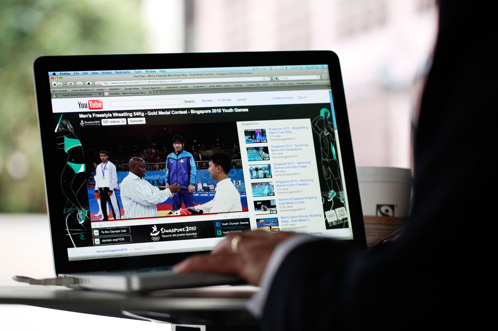Agreements between YouTube and media corporations allow viewers to watch clips of their favorite shows on YouTube for free.
While YouTube remains focused on user-generated material, viewers looking for commercial videos of movies and television shows are increasingly turning to HuluWebsite founded in 2007 that gives users access to an entire library of video clips without charge and syndicates its material to partner distribution sites such as MySpace and Facebook.. Established in 2007 following a deal between NBC Universal, News Corporation, and a number of leading Internet companies (including Yahoo!, AOL, MSN, and MySpace), the site gives users access to an entire library of video clips without charge and syndicates its material to partner distribution sites. The videos include full episodes of current hit shows such as House, Saturday Night Live, and The Simpsons, as well as older hits from the studios’ television libraries. Supported through advertising, the venture, which is only available to viewers in the United States, became the premier video broadcast site on the web within 2 years. In July 2009, the site received more than 38 million viewers and delivered more videos than any site except YouTube.Chuck Salter, “Can Hulu Save Traditional TV?” Fast Company, November 1, 2009, http://www.fastcompany.com/magazine/140/the-unlikely-mogul.html. Throughout the entire year, Hulu generated an estimated $120 million in revenue and increased its advertiser base to 250 sponsors.Chuck Salter, “Can Hulu Save Traditional TV?” Fast Company, November 1, 2009, http://www.fastcompany.com/magazine/140/the-unlikely-mogul.html. Its advertising model appeals to viewers, who need only to watch two minutes of promotion in 22 minutes of programming, compared with 8 minutes on television. Limiting sponsorship to one advertiser per show has helped make recall rates twice as high as those for the same advertisements on television, benefiting the sponsors as well as the viewers.
Some critics and television executives claim that the Hulu model has been too successful for its own good, threatening the financial underpinnings of cable television by reducing DVD sales and avoiding carriage feesFees paid to cable operators by broadcasters for transmitting their channels on the operators’ systems.—in 2009, Fox pulled most of the episodes of It’s Always Sunny in Philadelphia from Hulu’s site. Per the networks’ request, Hulu also shut off access to its programming from Boxee, a fledgling service that enabled viewers to stream online video to their television sets. “We have to find ways to advance the business rather than cannibalize it,” stated the distribution chief at TNT, a network that refused to stream episodes of shows such as The Closer on Hulu’s site.Frank Rose, “Hulu, a Victim of Its Own Success?” Wired, May 12, 2009, http://www.wired.com/epicenter/2009/05/hulu-victim-success/. However, many television executives realize that if they do not cannibalize their own material, others will. When a viral video of Saturday Night Live short “Lazy Sunday” hit the web in 2005, generating millions of hits on YouTube, NBC did not earn a dime. Broadcast networks—the Big Four and the CW—have also begun streaming shows for free in an effort to stop viewers from watching episodes on other websites.
Hulu executives are considering introducing paid content on the site in an effort to subsidize advertising revenue, a blow to consumers that would likely be softened by perks such as early access to content, ad-free shows, and more comprehensive archives.
Originally introduced in the early 1990s, the concept of video on demand (VOD)A pay-per-view system that enables viewers to order or download a film via television or Internet and watch it at their convenience.—a pay-per-view system that allows viewers to order or download a film via television or the Internet and watch it at their convenience—was not immediately successful because of the prohibitive cost of ordering a movie compared to buying or renting it from a store. Another early complaint about the service was that studios withheld movies until long after they were available on DVD, by which time most people who wanted to view the film had already seen it. Both of these disadvantages have since been remedied, with movies now released at the same time on VOD as they are on DVD at competitive rental prices. Currently, most cable and satellite television providers offer some form of on-demand service, either VOD, which provides movies 24 hours a day and enables viewers all the functionality of a DVD player (such as the ability to pause, rewind, or fast forward films), or NVOD (near video on demand)A system that broadcasts multiple copies of a film or program over short time intervals but does not allow viewers to control the video by pausing or rewinding it., which broadcasts multiple copies of a film or program over short time intervals but does not allow viewers to control the video.
As an alternative to cable or satellite VOD, viewers can also readily obtain movies and television shows over the Internet, via free services such as YouTube and Hulu or through paid subscriptions to sites that stream movies to a computer. Online DVD rental service Netflix started giving subscribers instant access to its catalog of older television programs and films in 2007, while Internet giant Amazon.com set up a rival service resembling the pay-per-view model in 2008. Viewers can also stream free episodes of their favorite shows via cable and broadcast networks’ websites. With the increasing popularity of smartphonesCell phones that provide services similar to those of a personal computer. Most contain built-in applications and Internet access.—cell phones that contain built-in applications and Internet access—viewers are using VOD as a way of watching television while they are out of the house. Having discovered that consumers are willing to watch entire television episodes or even films on their smartphones, industry executives are looking for ways to capitalize on smartphone technology. In 2010, News Corporation’s Fox Mobile Group was planning to launch Bitbop, a service that will stream television episodes to smartphones for $9.99 a month. Discussing the project, Bitbop architect Joe Bilman said that “the marriage of on-demand content and mobility has the power to light a fire in the smartphone space.”Brian Stelter, “Audiences, and Hollywood, Flock to Smartphones,” New York Times, May 2, 2010, http://www.nytimes.com/2010/05/03/business/media/03mobile.html. The shift from traditional television viewing to online viewing is making a small but noticeable dent in the $84 billion cable and satellite industry. Between the beginning of 2008 and the end of 2009, an estimated 800,000 U.S. households cut the cable cord in favor of web viewing.Erick Schonfeld, “Estimate: 800,000 U.S. Households Abandoned Their TVs for the Web,” TechCrunch, April 13, 2010, http://techcrunch.com/2010/04/13/800000-households-abandoned-tvs-web/.
Moving a step beyond VOD, cable and satellite television providers are combining aspects of traditional television viewing with online content to create an entirely new way of watching shows—interactive television (iTV)Television programming that enables viewers to engage with and control aspects of their viewing experience—for example, by playing a quiz using a remote control.. Using an additional set-top box and their remote control, viewers can utilize several different features that go beyond simply watching a television show. For example, interactive television enables users to take part in quiz shows, vote for a favorite contestant on a game show, view highlights or look up statistics during sports matches, create a music playlist or photo slideshow, and view local information such as weather and traffic through a tickerAn electronic banner that scrolls across the bottom of the television screen. Tickers usually provide up-to-date information about news or weather. under a current television program. Software such as Microsoft’s UltimateTV, released in 2001, even brought interactivity to individual television shows. For example, a viewer watching CBS crime series CSI can click on the interactive icon in the corner of the screen and obtain instant information about forensic analysis techniques, along with an episode guide, character biographies, and a map of the show’s Las Vegas setting.
Interactive television is beginning to take on the social format of the web, linking viewers with online communities who use communication tools such as Twitter and Skype IM to discuss what they just saw on television in real time. When popular musical comedy show Glee hit the screens in 2009, marketing experts at Fox pushed for a strong online presence, airing the pilot episode well in advance of the actual season debut and generating buzz on social networking sites such as Twitter and FacebookA social networking service that allows users to instant message and to publicly post thoughts, photographs, videos, links, and more.. Once the show gained widespread popularity, Fox launched an interactive hypertrailer on its website, allowing viewers to click on and “like” the show’s cast members on Facebook. The Glee cast also participates in weekly “tweet-peats,” which feature live Twitter feeds that scroll across the bottom of the screen during reruns of the show, providing behind-the-scenes details and answering fan questions. The CW network uses a similar technique with its “TV to Talk About” campaign, a tagline that changes from ad to ad to include iterations such as “TV to text about,” “blog about,” or “tweet about.” Its website offers forums where viewers can discuss episodes and interact with video extras, photos, and background clips about various shows. Online television forum Television Without Pity provides viewers with an alternative place for discussion that is not affiliated with any one network.
Figure 9.19
A Nielsen report found that during the fourth quarter of 2009, 60 percent of Americans spent up to 3.5 hours every month going online and watching television simultaneously.
Despite the shift toward interactive television, one barrier that manufacturers seem to be unwilling to cross is the addition of Internet to people’s television sets. Although Internet-enabled televisions began trickling into the market in 2008 and 2009, many industry executives remained skeptical of their potential. In February 2009, Sony spokesman Greg Belloni said, “Sony’s stance is that consumers don’t want an Internet-like experience with their TVs, and we’re really not focused on bringing anything other than Internet video or widgets to our sets right now.”Matt Richtel, “What Convergence? TV’s Hesitant March to the Net,” New York Times, February 15, 2009, http://www.nytimes.com/2009/02/16/technology/internet/16chip.html. Although some analysts predict that up to 20 percent of televisions will be Internet-enabled by 2012, consulting firm Deloitte anticipates the continued concurrent use of television sets with laptops, MP3 players, and other browser-enabled devices.Deloitte, “Deloitte Analyses Top Trends for the Media Industry for 2010,” news release, http://www.deloitte.com/view/en_GB/uk/industries/tmt/press-release/37df818581646210VgnVCM100000ba42f00aRCRD.htm.
Please respond to the following short-answer writing prompts. Each response should be a minimum of one paragraph.
Review Questions
Questions for Section 9.1 "The Evolution of Television"
Questions for Section 9.2 "The Relationship Between Television and Culture"
Questions for Section 9.3 "Issues and Trends in the Television Industry"
Questions for Section 9.4 "Influence of New Technologies"
Whether online viewing outlets continue to grow in popularity or viewers return to more traditional methods of watching television, broadcasters are likely to remain dependent on advertising sponsors to fund their programming. Advertising sales executives work for a specific network and sell television time to agencies and companies, working within budgets to ensure that clients make effective use of their advertising time.
Read through the U.S. Bureau of Labor Statistics overview of a career in advertising sales. You can find it at: http://www.bls.gov/oco/ocos297.htm.
Then, read BNET’s analysis of the television advertising industry at http://industry.bnet.com/media/10008136/truth-in-network-tv-advertising-and-what-to-do-about-it/. Once you have looked at both sites, use the information to answer these questions: